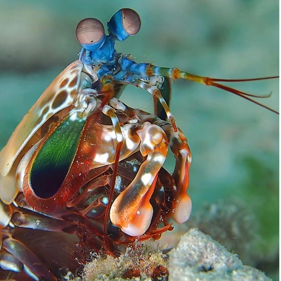
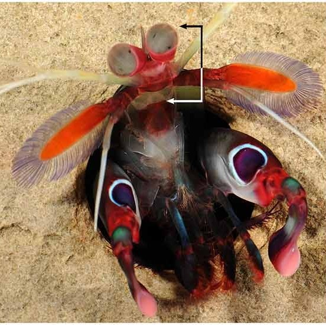
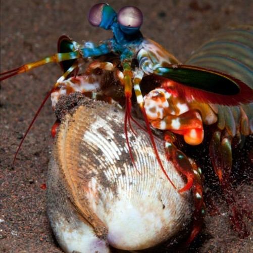

Fatos sobre o Stomatopoda.
Informações Gerais:

Os Stomatopodas, mais popularmente chamados de lacraias-do-mar e de nome científico Odontodactylus scyllarus, são animais marinhos com uma das visões mais impressionatente no reino animal! Antes de conhecer mais fatos interessantes acera desse animal, vamos dar uma olhada em sua classificação científica.
Classificação Científica dos Stomatopodas
|
Classificação Científica |
| Reino: |
Animalia. |
| Filo: |
Arthropoda. |
| Subfilo: |
Crustacea. |
| Classe: |
Malacostraca. |
| Subclasse: |
Hoplocarida. |
| Ordem: |
Stomatopoda. |
Visão

Os Stomatopodas possuem o sistema de visão de cores mais complexo dentre os animais, eles têm 16 cones receptivos de cores, enquanto nós humanos possuímos apenas três. Cada cone é capaz de enxergar até 100 cores, imagina o quão lindo deve ser enxergar o arco-íris com essa visão turbinada?
Esmagadoras

Os Stomatopodas são capazes de dar socos na velocidade de um tiro de rifle de calibre .22, chegando à 80 km/h! Os seus membros se movem de forma tão acelerada que eles são capazes de matar as presas apenas através das bolhas de água que são geradas quando eles os movimentam.
Bibliografia:
- Wikipedia: https://wikipedia.org/wiki/Stomatopoda
- The Oatmeal: https://theoatmeal.com/comics/mantis_shrimp
- Frontiers: https://www.frontiersin.org/articles/10.3389/fnbeh.2017.00012/full